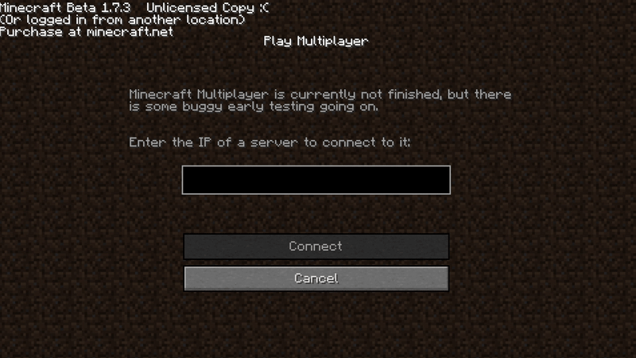

What is BEEBLE?
BEEBLE is a Beta Minecraft server that revisits the golden and primitive days of the vastly popular server, 2B2T. It's anarchy, 0 rules, as you would expect on modern counterparts, but with the back-to-basics combat. Swords and armor, I'll let you figure out the rest.
How To Play
To join BEEBLE, you will need to use a Minecraft Beta 1.7.3 client. You can download a launcher that supports older versions (as the Vanilla Launcher will crash upon attempting to load such old versions) such as the Prism Launcher or MultiMC. Once your selected launcher is installed and set to use Beta 1.7.3, simply go to Multiplayer and type in play.beeble.top — Now, just remember one rule. There are no rules.
p.s. just imagine that sounding like the narrator in the evolution of Minecraft